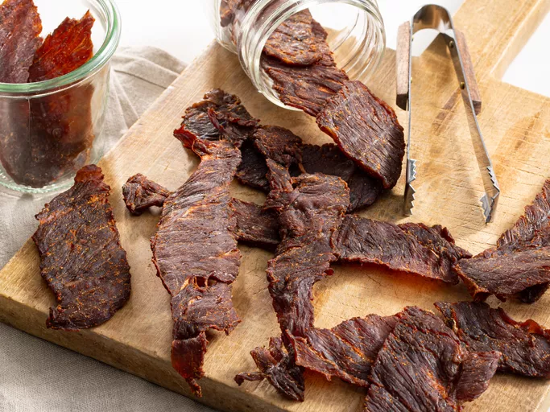

Home
Beef Jerky
A homemade beef jerky marinade made with soy sauce, liquid smoke, brown sugar, and spices makes the most flavorful beef jerky ever! I have been making jerky for years and I concocted this recipe by trial and error. Everyone says it is the best jerky they've ever had! My dehydrator is designed for jerky and takes about 4 hours to dry the meat. This could also be done in the oven or using other dehydrators, just check your manual for correct times as each machine is different. I hope you enjoy this jerky as much as my family and I do. Store in an airtight container or resealable bags.

What Is Beef Jerky?
Beef jerky is lean, trimmed beef that has been cut into strips and dried. Drying (or dehydrating) meat with heat and salt slows bacterial growth dramatically, stretching its lifespan by many months. The word "jerky" comes from a Quechua word: "Ch'arki," which literally means "dry, salted meat."
Ingredients
- ¼ cup low-sodium soy sauce
- 2 tablespoons Worcestershire sauce
- 2 tablespoons liquid smoke
- 2 tablespoons brown sugar
- teaspoons salt
- 1 teaspoon ground black pepper
- 1 teaspoon meat tenderizer
- 1 teaspoon garlic powder
- 1 teaspoon onion powder
- 1 teaspoon ground paprika
- 2 pounds beef round steak, cut into thin strips
Steps
- Gather all ingredients.
- Prepare the marinade: Combine soy sauce, Worcestershire sauce, liquid smoke, brown sugar, salt, pepper, meat tenderizer, garlic powder, onion powder, and paprika in a glass bowl.
- Place beef strips in a 9x13-inch glass baking dish. Pour marinade over top; toss until evenly coated. Cover and marinate in the refrigerator for 8 hours or overnight.
- Remove beef strips from the bowl and place between two pieces of plastic wrap; pound to 1/8-inch thickness.
- Arrange pounded beef strips in a single layer on the trays of a dehydrator. Dry at the dehydrator's highest setting until jerky is done to your liking, at least 4 hours.
- Enjoy!